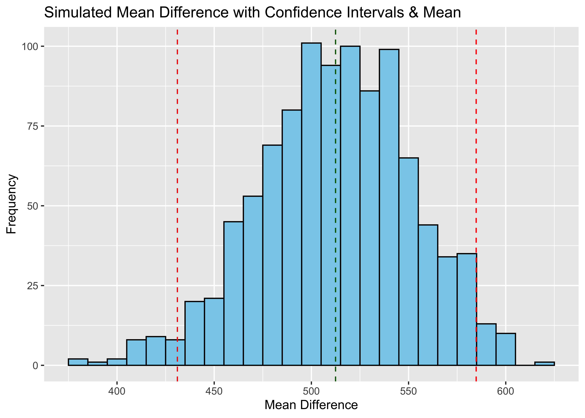

A great tool at our disposal here is bootstrapping. We have a small number of samples, and to begin with there is an element of estimation in this statistic because it would be nearly impossible and extremely expensive to measure the respiration levels in soil across all of Eastern China over the course of many years, but what we do have, is a somewhat sparse data set.
Throughout this project the biggest challenge has dealing with very spread out limited data, however, we have cleaned up our table and we can now run a bootstrap simulation to quantify the confidence interval of the mean difference between min and max values.
The process of bootstrapping is fairly straightforward, we will be sampling our cleaned dataset, with replacement, calculating the mean difference between the highest annual soil respiration value and the lowest annual soil respiration values for 1995 and 2015 in that sampled set. We will then do this many times to create a normal distribution of sampled mean values. This will give us a confidence interval of that change.
We can then proceed to repeat this porcess to better understand what a true population mean might look like. We then will compare this to the value that we actually observe with the given data.
## Linking to GEOS 3.11.0, GDAL 3.5.3, PROJ 9.1.0; sf_use_s2() is TRUE## ── Attaching core tidyverse packages ───────────────────────────────────────────────── tidyverse 2.0.0 ──
## ✔ dplyr 1.1.4 ✔ stringr 1.5.1
## ✔ forcats 1.0.0 ✔ tibble 3.2.1
## ✔ lubridate 1.9.3 ✔ tidyr 1.3.0
## ✔ purrr 1.0.2## ── Conflicts ─────────────────────────────────────────────────────────────────── tidyverse_conflicts() ──
## ✖ dplyr::filter() masks stats::filter()
## ✖ dplyr::lag() masks stats::lag()
## ℹ Use the conflicted package (<http://conflicted.r-lib.org/>) to force all conflicts to become errors## Rows: 259 Columns: 74
## ── Column specification ─────────────────────────────────────────────────────────────────────────────────
## Delimiter: ","
## chr (22): Entry_date, Author, Quality_flag, Contributor, Country, Region, Site_name, Site_ID, Manipul...
## dbl (52): Record_number, Study_number, Study_midyear, YearsOfData, Latitude, Longitude, Elevation, Ag...
##
## ℹ Use `spec()` to retrieve the full column specification for this data.
## ℹ Specify the column types or set `show_col_types = FALSE` to quiet this message.#lets just grab the two columns we are interested in:
RS <- RS_full[, c('Study_midyear', 'Rs_annual')]
head(RS)## # A tibble: 6 × 2
## Study_midyear Rs_annual
## <dbl> <dbl>
## 1 2004. 785
## 2 2004. 813
## 3 2004. 786
## 4 2004. 781
## 5 2004. 514
## 6 2004. 403#make a function that can compute the mean difference of a dataframe column:
rs_mean <- function (data, i){
highs_and_lows<- data[i, ] %>% group_by(Study_midyear) %>% summarize(High = max(Rs_annual), Min = min(Rs_annual))
differences <- (highs_and_lows$High - highs_and_lows$Min)
return(mean(differences))}# import the bootstap package
library(boot)
one_bootstrap <- function(){
result <- boot(data = RS, statistic = rs_mean, R = 1000)
return (result)}Great, now we have some infrastructure to run bootstrap simulations. First off let’s investigate one bootstrap iteration and its associated confidence interval:
#get one set bootstrap statistics
boot_results <- one_bootstrap()$t
# find the mean and CI
boot_mean <- mean(boot_results)
#we are looking at the middle 95%
boot_ci <- quantile(boot_results, c(0.025, 0.975))
# for plotting the data, we can all of the sub iterations into a DataFrame
plot_data <- data.frame(mean_statistic = boot_results)
# Plot using ggplot2
ggplot(plot_data, aes(x = mean_statistic)) +
geom_histogram(binwidth = 10, fill = "skyblue", color = "black") +
#Plotting the CI
geom_vline(xintercept = boot_ci[1], color = "red", linetype = "dashed") +
geom_vline(xintercept = boot_ci[2], color = "red", linetype = "dashed") +
#plotting the mean
geom_vline(xintercept = boot_mean, color = "darkgreen", linetype = "dashed") +
labs(x = "Mean Difference", y = "Frequency") +
ggtitle("Simulated Mean Difference")lets just make sure we get two different sets of results if we run our simulation agian:
#get one set bootstrap statistics
boot_results <- one_bootstrap()$t
# find the mean and CI
boot_mean <- mean(boot_results)
#we are looking at the middle 95%
boot_ci <- quantile(boot_results, c(0.025, 0.975))
# for plotting the data, we can all of the sub iterations into a DataFrame
plot_data <- data.frame(mean_statistic = boot_results)
# Plot using ggplot2
ggplot(plot_data, aes(x = mean_statistic)) +
geom_histogram(binwidth = 10, fill = "skyblue", color = "black") +
#Plotting the CI
geom_vline(xintercept = boot_ci[1], color = "red", linetype = "dashed") +
geom_vline(xintercept = boot_ci[2], color = "red", linetype = "dashed") +
#plotting the mean
geom_vline(xintercept = boot_mean, color = "darkgreen", linetype = "dashed") +
labs(x = "Mean Difference", y = "Frequency") +
ggtitle("Simulated Mean Difference with Confidence Intervals & Mean ") Now we can run this simulation a set number of times to determine the distribution of bootstrapped means and confidence intervals (because you can see that they also vary by simulation)
#how many bootstraps to run
n <- 1:100
# Creating an empty dataframe to store each new value of the BS
ci_and_stat <- tibble(
n = integer(),
low = double(),
high = double(),
mean_bs = double()
)
# Running the simulation
for (num in n) {
# Run one bootstrap
boot_stat <- one_bootstrap()$t
# Get the CIs
boot_ci <- quantile(boot_stat, c(0.025, 0.975))
low_ci <- boot_ci[1]
high_ci <- boot_ci[2]
# Add it to the dataframe
ci_and_stat <- bind_rows(ci_and_stat, tibble(
n = num,
low = low_ci,
high = high_ci,
mean_bs = mean(boot_stat)
))
}Awesome, now we can plot these to see the distribution of confidence intervals and get a pretty good gauge of our simulated statistic in comparison to the observed mean difference:
#specify our x and y values
x <- ci_and_stat$n
y <- ci_and_stat$mean_bs
#get true mean
highs_and_lows<- RS %>% group_by(Study_midyear) %>% summarize(High = max(Rs_annual), Min = min(Rs_annual))
rs_mean_difference <- mean((highs_and_lows$High - highs_and_lows$Min))
ggplot(ci_and_stat, aes(x, y)) + geom_point() +
geom_errorbar(aes(ymin = low, ymax = high)) +
labs(x="Bootstrap Iteration", y="Annual Respiration", main="Distribution of Confidence Intervals in Relation to Observed Statisitc") +
geom_hline(yintercept=rs_mean_difference, color = "Red", linetype="dashed")Wild, we can see here that our observed mean difference is statistically significant. Which means that the value we observed with the current sample doesn’t necessarily reflect that of the true population.
A potential reason for this is that there may be bias or outliers in the subset of data (which makes sense, we manipulated a lot here, but we are only exploring, and not drawing any major conclusions).
Looking back on our line plot, we see that there does seem to be a huge difference between the highest and lowest values in the years 2011, and 2012 which might be having a large impact on the observation statistic, but it might not represent the population well at all.